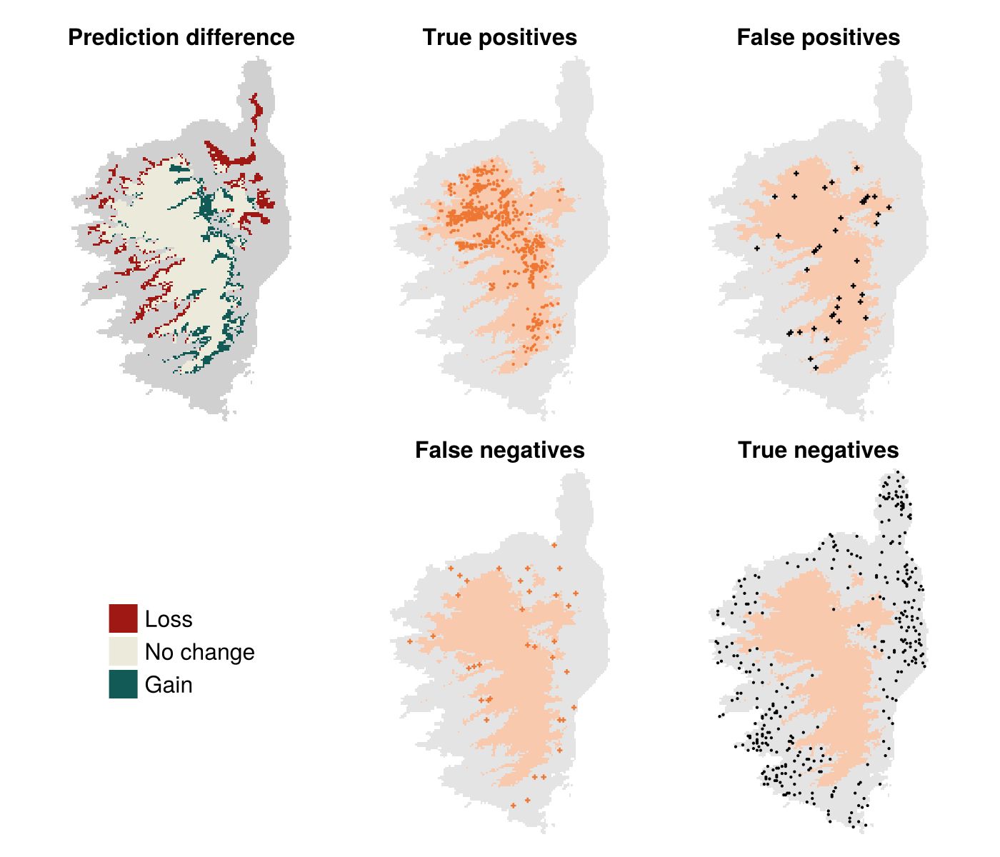

| Layer | Description | Details |
|---|---|---|
| BIO1 | Annual Mean Temperature | |
| BIO2 | Mean Diurnal Range | Mean of monthly (max temp - min temp) |
| BIO3 | Isothermality | (BIO2/BIO7) (×100) |
| BIO4 | Temperature Seasonality | standard deviation ×100 |
| BIO5 | Max Temperature of Warmest Month | |
| BIO6 | Min Temperature of Coldest Month | |
| BIO7 | Temperature Annual Range | (BIO5-BIO6) |
| BIO8 | Mean Temperature of Wettest Quarter | |
| BIO9 | Mean Temperature of Driest Quarter | |
| BIO10 | Mean Temperature of Warmest Quarter | |
| BIO11 | Mean Temperature of Coldest Quarter | |
| BIO12 | Annual Precipitation | |
| BIO13 | Precipitation of Wettest Month | |
| BIO14 | Precipitation of Driest Month | |
| BIO15 | Precipitation Seasonality | Coefficient of Variation |
| BIO16 | Precipitation of Wettest Quarter | |
| BIO17 | Precipitation of Driest Quarter | |
| BIO18 | Precipitation of Warmest Quarter | |
| BIO19 | Precipitation of Coldest Quarter |
6 Variable preparation
In Chapter 5, we introduced a simple classifier trained on a dataset of presence and pseudo-absences of a species (Sitta whiteheadi), which we predicted using the mean annual temperature as well as the annual total precipitation. This choice of variables was motivated by our knowledge of the fact that most species tend to have some temperature and precipitation they are best suited to. But we can approach the exercise of selecting predictive variables in a far more formal way, and this will form the core of this chapter. Specifically, we will examine two related techniques: variable selection, and feature engineering.
There are two reasons to think about variable selection and feature engineering – first, the variables we have may not all be predictive for the specific problem we are trying to solve; second, the variables may not be expressed in the correct “way” to solve our problem. This calls for a joint approach of selecting and transforming features. Before we do anything to our features (transformation or selection), we need to talk about data leakage.
6.1 The problem: optimal set of BioClim variables for the Corsican nuthatch
The BioClim suite of environmental variables are 19 measurements derived from monthly recordings of temperature and precipitation. They are widely used in species distribution modeling, despite some spatial discontinuities due to the methodology of their reconstruction (Booth 2022); this is particularly true when working from the WorldClim version (Fick and Hijmans 2017), and not as problematic when using other data products like CHELSA (Karger et al. 2017).
The definitions of the 19 BioClim variables are given in Table 6.1. As we can see from this table, a number of variables are either derived from the same months, or direct (even sometimes additive) combinations of one another. For this reason, and because there are 19 variables, this is a good dataset to evaluate the use of variable selection and transformation.
In this chapter, we will try to improve the model introduced in Chapter 5, by evaluating different methods to prepare our predictor variables.
6.2 What is data leakage?
Data leakage is a concept that is, if you can believe it, grosser than it sounds.
The purpose of this section is to put the fear of data leakage in you, because it can, and most assuredly will, lead to bad models, which is to say (as we discussed in Section 3.1), models that do not adequately represent the underlying data, in part because we have built-in some biases into them. In turn, this can eventually lead to decreased explainability of the models, which erodes trust in their predictions (Amarasinghe et al. 2023). As illustrated by Stock, Gregr, and Chan (2023), a large number of ecological applications of machine learning are particularly susceptible to data leakage, meaning that this should be a core point of concern for us.
6.2.1 Consequences of data leakage
We take data leakage so seriously because it is one of the top ten mistakes in applied machine learning (Nisbet et al. 2018). Data leakage happens information “leaks” from the training conditions to the evaluation conditions; in other words, when the model is evaluated after mistakenly being fed information that would not be available in real-life situations. Note that this definition of leakage is different from another notion, namely the loss of data availability over time (Peterson et al. 2018).
It is worth stopping for a moment to consider what these “real-life situations” are, and how they differ from the training of the model. Most of this difference can be summarized by the fact that when we are applying a model, we can start from the model only. Which is to say, the data that have been used for the training and validation of the model may have been lost, without changing the applicability of the model: it works on entirely new data. We have discussed this situation in ?sec-crossvalidation-testing: the test of a model is conducted on data that have never been used for training, because we want to evaluate its performance in the conditions where it will be applied.
Because this is the behavior we want to simulate with a validation dataset, it is very important to fully disconnect the testing data from the rest of the data. We can illustrate this with an example. Let’s say we want to work on a time series of population size, such as provided by the BioTIME project (Dornelas et al. 2018). One naïve approach would be to split this the time series at random into three datasets. We can use one to train the models, one to validate these models, and a last one for testing.
Congratulations! We have created data leakage! Because we are splitting our time series at random, the model will likely have been trained using data that date from after the start of the validation dataset. In other words: our model can peek into the future. This is highly unlikely to happen in practice, due to the laws of physics. A strategy that would prevent leakage would have been to pick a cut-off date to define the validation dataset, and then to decide how to deal with the training and testing sets.
6.2.2 Avoiding data leakage
The most common advice given in order to prevent data leakage is the “learn/predict separation” (Kaufman, Rosset, and Perlich 2011). Simply put, this means that whatever happens to the data used for training cannot be simultaneously applied to the data used for testing (or validation).
A counter-example where performing the transformation before the analysis is when the transformation is explicitly sought out as an embedding, where we want to predict the position of instances in the embedded space, as in .e.g. Runghen, Stouffer, and Dalla Riva (2022).
Assume that we want to transform our data using a Principal Component Analysis (PCA; Pearson (1901)). Ecologists often think of PCA as a technique to explore data (Legendre and Legendre 2012), but it is so much more than that! PCA is a model, because we can derive, from the data, a series of weights (in the transformation matrix), which we can then apply to other datasets in order to project them in the space of the projection of the training data.
If we have a dataset \(\mathbf{X}\), which we split into two components \(\mathbf{X}_0\) for training ,and \(\mathbf{X}_1\) for validation, there are two ways to use a PCA to transform these data. The first is \(\mathbf{T} = \mathbf{X}\mathbf{W}\), which uses the full dataset. When we predict the position of the validation data, we could use the transformation \(\mathbf{T}_1 = \mathbf{X}_1\mathbf{W}\), but this would introduce data leakage: we have trained the transformation we apply to \(\mathbf{X}_1\) using data that are already in \(\mathbf{X}_1\), and therefore we have not respected the learn/predict separation. This way to introduce data leakage is extremely common in the species distribution literature (see e.g. De Marco and Nóbrega 2018).

The second (correct) way to handle this situation is to perform our PCA using \(\mathbf{T}_0 = \mathbf{X}_0\mathbf{W}_0\), which is to say, the weights of our PCA are derived only from the training data. In this situation, whenever we project the data in the validation set using \(\mathbf{T}_1 = \mathbf{X}_1\mathbf{W}_0\), we respect the learn/predict separation: the transformation of \(\mathbf{X}_1\) is entirely independent from the data contained in \(\mathbf{X}_1\). This is illustrated in Figure 6.1.
6.2.2.1 How to work in practice?
Although avoiding data leakage is a tricky problem, there is a very specific mindset we can adopt that goes a long way towards not introducing it in our analyses, and it is as follows: every data transformation step is a modeling step that is part of the learning process. We do not, for example, apply a PCA and train the model on the projected variables – we feed raw data into a model, the first step of which is to perform this PCA for us.
This approach works because everything that can be represented as numbers is a model that can be trained.
If you want to transform a variable using the z-score, this is a model! It has two parameters that you can learn from the data, \(\mu\) (the average of the variable) and \(\sigma\) (its standard deviation). You can apply it to a data point \(y\) with \(\hat y = (y - \mu)\sigma^{-1}\). Because this is a model, we need a dataset to learn these parameters from, and because we want to maintain the learn/predict separation, we will use the train dataset to get the values of \(\mu_0\) and \(\sigma_0\). This way, when we want to get the z-score of a new observation, for example from the testing dataset, we can get it using \(\hat y_1 = (y_1 - \mu_0)\sigma_0^{-1}\). The data transformation is entirely coming from information that was part of the training set.
One way to get the learn/predict transformation stupendously wrong is to transform our validation, testing, or prediction data using \(\hat y_1 = (y_1 - \mu_1)\sigma_1^{-1}\). This can be easily understood with an example. Assume that the variable \(y_0\) is the temperature in our training dataset. We are interested in making a prediction in a world that is 2 degrees hotter, uniformly, which is to say that for whatever value of \(y_0\), the corresponding data point we use for prediction is \(y_1 = y_0 + 2\). If we take the z-score of this new value based on its own average and standard deviation, a temperature two degrees warmer in the prediction data will have the same z-score as its original value, or in other words, we have hidden the fact that there is a change in our predictors!
Treating the data preparation step as a part of the learning process, which is to say that we learn every transformation on the training set, and retain this transformation as part of the prediction process, we are protecting ourselves against both data leakage and the hiding of relevant changes in our predictors.
6.3 Variable selection
6.3.1 The curse of dimensionality
The number of variables we use for prediction is the number of dimensions of a problem. It would be tempting to say that adding dimensions should improve our chances to find a feature alongside which the classes become linearly separable. If only!
The “curse of dimensionality” is the common term of everything breaking down when the dimensions of a problem increase. In our perspective, where we rely on the resemblance between features to make a prediction, increasing the dimensions of a problem means adding features, and it has important consequences on the distance between observations. Picture two points positioned at random on the unit interval: the average distance between them is 1/3. If we add one dimension, keeping two points but turning this line into a cube, the average distance would be about 1/2. For a cube, about 2/3. For \(n\) dimensions, we can figure out that the average distance grows like \(\sqrt{n/6 + c}\), which is to say that when we add more dimensions, we make the average distance between two points go to infinity. This effect is also affecting ecological studies (e.g. Smith et al. 2017).
Therefore, we need to approach the problem of “which variables to use” with a specific mindset: we want a lot of information for our model, but not so much that the space in which the predictors exist turns immense. There are techniques for this.
6.3.2 Step-wise approaches to variable selection
In order to try and decrease the dimensionality of a problem, we can attempt to come up with a method to decide which variables to include, or to remove, from a model. This practice is usually called “stepwise” selection, and is the topic of intense debate in ecology, although several studies point to the fact that there is rarely a best technique to select variables (Murtaugh 2009), that the same data can usually be adequately described by competing models (WHITTINGHAM et al. 2006), and that classifiers can show high robustness to the inclusion of non-informative variables (Fox et al. 2017). Situations in which variable selection has been shown top be useful is the case of model transfer (Petitpierre et al. 2016), or (when informed by ecological knowledge), the demonstration that classes of variables had no measurable impact on model performance (Thuiller, Araújo, and Lavorel 2004).
Why, so, should we select the variables we put in our models?
The answer is simple: we seek to solve a specific problem in an optimal way, where “optimal” refers to the maximization of a performance measure we decided upon a priori. In our case, this is the MCC. Therefore, an ideal set of predictors is the one that, given our cross-validation strategy, maximizes our measure of performance.
6.3.3 Forward selection
In forward selection, assuming that we have \(f\) features, we start by building \(f\) models, each using one feature. For example, using the BioClim variables, \(m_1\) would be attempting to predict presences and absences based only on temperature. Out of these models, we retain the variable given by \(\text{argmax}_f \text{MCC}(m_f)\), where \(\text{MCC}(m_f)\) is the average value of MCC for the \(f\)-th model on the validation datasets. This is the first variable we add to our set of selected variables. We then train \(f-1\) models, and then again add the variable that leads to the best possible increase in the average value of the MCC. When we cannot find a remaining variable that would increase the performance of the model, we stop the process, and return the optimal set of variables. Forward selection can be constrained by, instead of starting from variables one by one, starting from a pre-selected set of variables that will always be included in the model.
There are two important things to consider here. First, the set of variables is only optimal under the assumptions of the stepwise selection process: the first variable is the one that boosts the predictive value of the model the most on its own, and the next variables in the context of already selected variables. Second, the variables are evaluated on the basis of their ability to improve the performance of the model; this does not imply that they are relevant to the ecological processes happening in the dataset. Infering mechanisms on the basis of variable selection is foolish (Tredennick et al. 2021).
6.3.4 Backward selection
The opposite of forward selection is backward selection, in which we start from a complete set of variables, then remove the one with the worst impact on model performance, and keep proceeding until we cannot remove a variable without making the model worse. The set of variables that remain will be the optimal set of variables. In almost no cases will forward and backward selection agree on which set of variables is the best – we have to settle this debate by either picking the model with the least parameters (the most parsimonious), or the one with the best performance.
Why not evaluate all the combination of variables?
Keep in mind that we do not know the number of variables we should use; therefore, for the 19 BioClim variables, we would have to evaluate \(\sum_f \binom{19}{f}\), which turns out to be an immense quantity (for example, \(\binom{19}{9}=92378\)). For this reason, a complete enumeration of all variable combinations would be extremely wasteful.
6.3.5 Removal of colinear variables
Co-linearity of variables is challenging for all types of ecological models (Graham 2003). In the case of species distribution models (De Marco and Nóbrega 2018), the variables are expected to be strongly auto-correlated, both because they have innate spatial auto-correlation, and because they are derived from a smaller set of raw data (Dormann et al. 2012). For this reason, it is a good idea to limit the number of colinear variables. In the BioClim variables, there
6.4 Multivariate transformations
6.4.1 PCA-based transforms
Principal Component Analysis (PCA) is one of the most widely used multi-variate techniques in ecology, and is a very common technique to prepare variables in applied machine learning. One advantage of PCA is that it serves both as a way to remove colinearity, in that the principal components are orthogonal, and as a way to reduce the dimensionality of the problem as long as we decide on a threshold on the proportion of variance explained, and only retain the number of principal components needed to reach this threshold. For applications where the features are high-dimensional, PCA is a well established method to reduce dimensionality and extract more information in the selected principal components (Howley et al. 2005). In PCA, the projection matrix \(\mathbf{P}\) is applied to the data using \(\mathbf{P}^\top(\mathbf{x}-\mathbf{\mu})\), where \(\mathbf{x}\) is the feature matrix with means \(\mathbf{\mu}\). Typically, the dimensions of \(\mathbf{P}\) are lower than the dimensions of \(\mathbf{x}\), resulting in fewer dimensions to the problem. Cutoffs on the dimensions of \(\mathbf{P}\) are typically expressed as a proportion of the overall variance maintained after the projection. Variants of PCA include kernel PCA (Schölkopf, Smola, and Müller 1998), using a higher-dimensional space to improve the separability of classes, and probabilistic PCA (Tipping and Bishop 1999), which relies on modeling the data within a latent space with lower dimensionality.
6.4.2 Whitening transforms
Another class of potentially very useful data transformations is whitening transforms, which belongs to the larger category of decorrelation methods. These methods do not perform any dimensionality reduction, but instead remove the covariance in the datasets. Whitening has proven to be particularly effective at improving the predictive ability of models applied to data with strong covariance structure (Koivunen and Kostinski 1999). In essence, given a matrix of features \(\mathbf{x}\), with averages \(\mathbf{\mu}\) and covariance \(\mathbf{C}\), a whitening transform \(\mathbf{W}\) is the one of the matrices that satisfies \(\mathbf{W}^\top\mathbf{C}\mathbf{W} = \mathbf{I}\). In other words, the whitening transform results in a new set of features with unit variance and no covariance: the dimensionality of the problem remains the same but the new random variables are independent. Given any dataset with covariance matrix \(\mathbf{C}\), if any \(\mathbf{W}\) is a whitening transform, then so to are any matrices \(\mathbf{W}\mathbf{R}\) where \(\mathbf{R}\) performs a rotation with \(\mathbf{R}^\top\mathbf{R} = \mathbf{I}\). The optimal whitening transform can be derived through a variety of ways (see e.g. Kessy, Lewin, and Strimmer 2018). The whitening transform is applied to the input vector using \(\mathbf{W}^\top (\mathbf{x}-\mathbf{\mu})\): this results in new random variables that have a mean of 0, and unit variance. The new input vector after the transformation is therefore an instance of “white noise” (Vasseur and Yodzis 2004).
6.5 Application: optimal variables for Corsican nuthatch
Before we start, we can re-establish the baseline performance of the model from Chapter 5. In this (and the next) chapters, we will perform k-folds cross-validation (see ?sec-crossvalidation-kfolds for a refresher), using \(k=15\). This strategy gives an average MCC of 0.76, which represents our “target”: any model with a higher MCC will be “better” according to our criteria.
In a sense, this initial model was already coming from a variable selection process, only we did not use a quantitative criteria to include variables. And so, it is a good idea to evaluate how our model performed, relative to a model including all the variables. Running the NBC again using all 19 BioClim variables from Table 6.1, we get an average MCC on the validation data of 0.794. This is a small increase, but an increase nevertheless – our dataset had information that was not captured by temperature and precipitation. But this model with all the variables most likely includes extraneous information that does not help, or even hinders, the predictive ability of our model. Therefore, there is probably a better version of the model somewhere, that uses the optimal set of variables, potentially with the best possible transformation applied to them.
In this section, we will start by evaluating the efficiency of different approaches to variable selection, then merge selection and transformation together to provide a model that is optimal with regards to the training data we have (the workflow is outlined in Figure 6.2). In order to evaluate the model, we will maintain the use of the MCC; in addition, we will report the PPV and NPV (like in Chapter 5), as well as the accuracy and True-Skill Statistic (TSS). The TSS is defined as the sum of true positive and true negative rates, minus one, and is an alternative measure to the MCC (although it is more sensitive to some biases). Although several authors have advocated for the use of TSS (ALLOUCHE, TSOAR, and KADMON 2006), Leroy et al. (2018) have an interesting discussion of how the TSS is particularly sensitive to issues in the quality of (pseudo) absence data. For this reason, and based on the literature we covered in Chapter 5, there is no strong argument against using MCC as our selection measure.
In Chapter 7, we will revisit the question of how the MCC is “better”, and spend more time evaluating alternatives. For now, we can safely assume that MCC is the best.
To prevent the risk of interpreting the list of variables that have been retained by the model, we will not make a list of which they are (yet). This is because, in order to discuss the relative importance of variables, we need to introduce a few more concepts and techniques, which will not happen until Chapter 8; at this point, we will revisit the list of variables identified during this chapter, and compare their impact on model performance to their actual importance in explaining predictions.

6.5.1 Variable selection
We will perform four different versions of stepwise variable selection. Forward, forward from a pre-selected set of two variables (temperature and precipitation), backward, and based on the Variance Inflation Factor (with a cutoff of 10). The results are presented in Table 6.2.
| Model | Variables | MCC | NPV | PPV | Acc. | TSS |
|---|---|---|---|---|---|---|
| Chapter 5 baseline | 2 | 0.76 | 0.859 | 0.901 | 0.881 | 0.76 |
| All var. | 19 | 0.794 | 0.871 | 0.922 | 0.897 | 0.795 |
| Fwd. | 6 | 0.848 | 0.901 | 0.946 | 0.924 | 0.849 |
| Fwd. (constr.) | 8 | 0.83 | 0.888 | 0.94 | 0.915 | 0.832 |
| Backw. | 9 | 0.846 | 0.901 | 0.944 | 0.923 | 0.847 |
| VIF | 2 | 0.466 | 0.793 | 0.708 | 0.736 | 0.434 |
The best model is given by forward selection, although backwards selection also gives a very close performance. At this point, we may decide to keep these two strategies, and evaluate the effect of different transformations of the data.
6.5.2 Variable transformation
Based on the results from Table 6.2, we retain forward and backwards selection as our two stepwise selection methods, and now apply an additional transformation (as in Figure 6.2) to the subset of the variables. The results are presented in Table 6.3. Based on these results, and using the MCC as the criteria for the “best” model, we see that combining forward selection with a whitening transform gives the best predictive performance. Note that the application of a transformation does change the result of variable selection, as evidences by the fact that the number of retained variables changes when we apply a transformation.
| Selection | Transformation | Variables | MCC | NPV | PPV | Acc. | TSS |
|---|---|---|---|---|---|---|---|
| Fwd. | PCA | 4 | 0.853 | 0.898 | 0.952 | 0.926 | 0.855 |
| Fwd. | Whitening | 10 | 0.877 | 0.918 | 0.956 | 0.938 | 0.878 |
| Fwd. | Raw data | 6 | 0.848 | 0.901 | 0.946 | 0.924 | 0.849 |
| Backw. | PCA | 13 | 0.835 | 0.888 | 0.943 | 0.918 | 0.838 |
| Backw. | Whitening | 15 | 0.869 | 0.913 | 0.953 | 0.934 | 0.871 |
| Backw. | Raw data | 9 | 0.846 | 0.901 | 0.944 | 0.923 | 0.847 |
6.5.3 Model selection
In Table 6.2 and ?tbl-predictions-transformation, we have evaluated a series of several modeling strategies, defined by a variable selection and transformation technique. Using the MCC as our reference for what constitutes the best model, we can now apply the model to the relevant set of predictors, in order to see how these refinements result in a new predicted range for the species.
These results are presented in Figure 6.3.

6.6 Conclusion
In this chapter, we have discussed the issues with dimensionality and data leakage, and established a methodology to reduce the number of dimensions (and possible re-project the variables) while maintaining the train/predict separation. This resulted in a model whose performance (as evaluated using the MCC) increased quite significantly, which resulted in the predicted range of Sitta whiteheadi changing in space.
In Chapter 7, we will finish to refine this model, by considering that the NBC is a probabilistic classifier, and tuning various hyper-parameters of the model using learning curves and thresholding. This will result in the final trained model, the behavior of which we will explore in Chapter 8, to understand how the model makes predictions.
References
ALLOUCHE, OMRI, ASAF TSOAR, and RONEN KADMON. 2006. “Assessing the Accuracy of Species Distribution Models: Prevalence, Kappa and the True Skill Statistic (TSS).” Journal of Applied Ecology 43 (6): 1223–32. https://doi.org/10.1111/j.1365-2664.2006.01214.x.
Amarasinghe, Kasun, Kit T. Rodolfa, Hemank Lamba, and Rayid Ghani. 2023. “Explainable Machine Learning for Public Policy: Use Cases, Gaps, and Research Directions.” Data & Policy 5. https://doi.org/10.1017/dap.2023.2.
Booth, Trevor H. 2022. “Checking Bioclimatic Variables That Combine Temperature and Precipitation Data Before Their Use in Species Distribution Models.” Austral Ecology 47 (7): 1506–14. https://doi.org/10.1111/aec.13234.
De Marco, Paulo, and Caroline Corrêa Nóbrega. 2018. “Evaluating Collinearity Effects on Species Distribution Models: An Approach Based on Virtual Species Simulation.” Edited by Luciano Bosso. PLOS ONE 13 (9): e0202403. https://doi.org/10.1371/journal.pone.0202403.
Dormann, Carsten F., Jane Elith, Sven Bacher, Carsten Buchmann, Gudrun Carl, Gabriel Carré, Jaime R. García Marquéz, et al. 2012. “Collinearity: A Review of Methods to Deal with It and a Simulation Study Evaluating Their Performance.” Ecography 36 (1): 27–46. https://doi.org/10.1111/j.1600-0587.2012.07348.x.
Dornelas, Maria, Laura H. Antão, Faye Moyes, Amanda E. Bates, Anne E. Magurran, Dušan Adam, Asem A. Akhmetzhanova, et al. 2018. “BioTIME: A Database of Biodiversity Time Series for the Anthropocene.” Global Ecology and Biogeography 27 (7): 760–86. https://doi.org/10.1111/geb.12729.
Fick, Stephen E., and Robert J. Hijmans. 2017. “WorldClim 2: New 1-Km Spatial Resolution Climate Surfaces for Global Land Areas.” International Journal of Climatology 37 (12): 4302–15. https://doi.org/10.1002/joc.5086.
Fox, Eric W., Ryan A. Hill, Scott G. Leibowitz, Anthony R. Olsen, Darren J. Thornbrugh, and Marc H. Weber. 2017. “Assessing the Accuracy and Stability of Variable Selection Methods for Random Forest Modeling in Ecology.” Environmental Monitoring and Assessment 189 (7). https://doi.org/10.1007/s10661-017-6025-0.
Graham, Michael H. 2003. “CONFRONTING MULTICOLLINEARITY IN ECOLOGICAL MULTIPLE REGRESSION.” Ecology 84 (11): 2809–15. https://doi.org/10.1890/02-3114.
Howley, Tom, Michael G. Madden, Marie-Louise O’Connell, and Alan G. Ryder. 2005. “The Effect of Principal Component Analysis on Machine Learning Accuracy with High Dimensional Spectral Data.” In, 209–22. Springer London. https://doi.org/10.1007/1-84628-224-1_16.
Karger, Dirk Nikolaus, Olaf Conrad, Jürgen Böhner, Tobias Kawohl, Holger Kreft, Rodrigo Wilber Soria-Auza, Niklaus E. Zimmermann, H. Peter Linder, and Michael Kessler. 2017. “Climatologies at High Resolution for the Earth’s Land Surface Areas.” Scientific Data 4 (1). https://doi.org/10.1038/sdata.2017.122.
Kaufman, Shachar, Saharon Rosset, and Claudia Perlich. 2011. “Leakage in Data Mining.” Proceedings of the 17th ACM SIGKDD International Conference on Knowledge Discovery and Data Mining, August. https://doi.org/10.1145/2020408.2020496.
Kessy, Agnan, Alex Lewin, and Korbinian Strimmer. 2018. “Optimal Whitening and Decorrelation.” The American Statistician 72 (4): 309–14. https://doi.org/10.1080/00031305.2016.1277159.
Koivunen, A. C., and A. B. Kostinski. 1999. “The Feasibility of Data Whitening to Improve Performance of Weather Radar.” Journal of Applied Meteorology 38 (6): 741–49. https://doi.org/10.1175/1520-0450(1999)038<0741:tfodwt>2.0.co;2.
Legendre, Pierre, and Louis Legendre. 2012. Numerical ecology. Third English edition. Vol. 20. Developments in environmental modelling, Developments in environmental modelling. Oxford, UK: Elsevier.
Leroy, Boris, Robin Delsol, Bernard Hugueny, Christine N. Meynard, Chéïma Barhoumi, Morgane Barbet-Massin, and Céline Bellard. 2018. “Without Quality Presenceabsence Data, Discrimination Metrics Such as TSS Can Be Misleading Measures of Model Performance.” Journal of Biogeography 45 (9): 1994–2002. https://doi.org/10.1111/jbi.13402.
Murtaugh, Paul A. 2009. “Performance of Several Variable-Selection Methods Applied to Real Ecological Data.” Ecology Letters 12 (10): 1061–68. https://doi.org/10.1111/j.1461-0248.2009.01361.x.
Nisbet, Robert, Gary Miner, Ken Yale, John F. Elder, and Andrew F. Peterson. 2018. Handbook of Statistical Analysis and Data Mining Applications. Second edition. London: Academic Press.
Pearson, Karl. 1901. “LIII. On Lines and Planes of Closest Fit to Systems of Points in Space.” The London, Edinburgh, and Dublin Philosophical Magazine and Journal of Science 2 (11): 559–72. https://doi.org/10.1080/14786440109462720.
Peterson, A. Townsend, Alex Asase, Dora Canhos, Sidnei de Souza, and John Wieczorek. 2018. “Data Leakage and Loss in Biodiversity Informatics.” Biodiversity Data Journal 6 (November). https://doi.org/10.3897/bdj.6.e26826.
Petitpierre, Blaise, Olivier Broennimann, Christoph Kueffer, Curtis Daehler, and Antoine Guisan. 2016. “Selecting Predictors to Maximize the Transferability of Species Distribution Models: Lessons from Cross-Continental Plant Invasions.” Global Ecology and Biogeography 26 (3): 275–87. https://doi.org/10.1111/geb.12530.
Runghen, Rogini, Daniel B. Stouffer, and Giulio V. Dalla Riva. 2022. “Exploiting Node Metadata to Predict Interactions in Bipartite Networks Using Graph Embedding and Neural Networks.” Royal Society Open Science 9 (8). https://doi.org/10.1098/rsos.220079.
Schölkopf, Bernhard, Alexander Smola, and Klaus-Robert Müller. 1998. “Nonlinear Component Analysis as a Kernel Eigenvalue Problem.” Neural Computation 10 (5): 1299–319. https://doi.org/10.1162/089976698300017467.
Smith, Megan L., Megan Ruffley, Anahí Espíndola, David C. Tank, Jack Sullivan, and Bryan C. Carstens. 2017. “Demographic Model Selection Using Random Forests and the Site Frequency Spectrum.” Molecular Ecology 26 (17): 4562–73. https://doi.org/10.1111/mec.14223.
Stock, Andy, Edward J. Gregr, and Kai M. A. Chan. 2023. “Data Leakage Jeopardizes Ecological Applications of Machine Learning.” Nature Ecology & Evolution, August. https://doi.org/10.1038/s41559-023-02162-1.
Thuiller, Wilfried, Miguel B Araújo, and Sandra Lavorel. 2004. “Do We Need Land-Cover Data to Model Species Distributions in Europe?” Journal of Biogeography 31 (3): 353–61. https://doi.org/10.1046/j.0305-0270.2003.00991.x.
Tipping, Michael E., and Christopher M. Bishop. 1999. “Probabilistic Principal Component Analysis.” Journal of the Royal Statistical Society Series B: Statistical Methodology 61 (3): 611–22. https://doi.org/10.1111/1467-9868.00196.
Tredennick, Andrew T., Giles Hooker, Stephen P. Ellner, and Peter B. Adler. 2021. “A Practical Guide to Selecting Models for Exploration, Inference, and Prediction in Ecology.” Ecology 102 (6). https://doi.org/10.1002/ecy.3336.
Vasseur, David A., and Peter Yodzis. 2004. “THE COLOR OF ENVIRONMENTAL NOISE.” Ecology 85 (4): 1146–52. https://doi.org/10.1890/02-3122.
WHITTINGHAM, MARK J., PHILIP A. STEPHENS, RICHARD B. BRADBURY, and ROBERT P. FRECKLETON. 2006. “Why Do We Still Use Stepwise Modelling in Ecology and Behaviour?” Journal of Animal Ecology 75 (5): 1182–89. https://doi.org/10.1111/j.1365-2656.2006.01141.x.